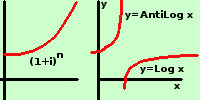

Calcolo del montante ad interesse composto per tempi interi con tasso non sulle tavole
Si impiega il capitale di € 20000 per 18 anni ad interesse composto al 2,673%.
Calcolarne il montante nei vari modi possibili e confrontare i risultati
In questo caso abbiamo un numero di anni tale da farci scartare a priori il calcolo diretto, inoltre il tasso non e' sulla tavole
Dati
C = 20000,00 €
t = 18
i = 2,60% = 0,02673
Eseguo l'esercizio nei vari modi possibili:
- Come gia' accennato scarto il metodo del calcolo del montante come prodotto di capitalizzazioni semplici perche' 18 anni renderebbero il calcolo troppo lungo
- Utilizzo la calcolatrice
Imposto, sullo schermo il calcolo
20000·(1+0,02673)18
ottengo 32154,55687637 che approssimo a 32154,56
il montante e' di € 32154,56
- utilizzo le tavole logaritmiche a 7 decimali
Anche in questo esercizio calcolo solamente il fattore (1,02673)18 e poi moltiplichero' il risultato per il capitale
M = 20000(1+0,02673)18
Calcolo il fattore (1+0,02673)18 coi logaritmi; per la proprieta' dei logaritmi ho
Log (1,02673)18 = 18·Log 1,02673 =
trasformo il numero in Logaritmo
leggo sulle tavole logaritmiche a 7 decimali
10267,3 e' compreso fra 10267 e 10268 quindi devo fare l'interpolazione
| 10267,0 |
→ |
0114436 |
|
| 10267,3 |
→ |
0114436+x |
423 |
| 10268,0 |
→ |
0114859 |
|
Di fianco ai due risultati trovi il numero 428 che corrisponde alla differenza fra i due valori trovati mentre la differenza fra il mio valore e quello minore e'
102673-102670 = 3
Nella tabella del 423 a 3 corrisponde 126,9 e questo e' il mio x
quindi scrivo
0114436 + 126,9 = 0114562,9 = 01145629 la virgola ti indica solo come eseguire la somma
Log 1,02673 = 0,01145629
Quindi
Log (1+0,2673)18 = 18·Log(1,02673) = 18·0,01145629 = 0,20621322
Questo e' il logaritmo, ora trovo l'antilogaritmo (lo trasformo in valore normale)
AntiLog 0,20621322 =
Essendo la caratteristica 0 il valore dell'antilogaritmo sara' compreso fra 1 e 10, quindi avremo una cifra significativa
prima della virgola
la mia mantissa nella tavola a 7 decimali (20621322) non c'e'(il tempo 18 anni e' troppo elevato) e quindi considero 5 cifre 20621,322 e cerco fra i logaritmi normali
leggo sulle tavole a 5 decimali e trovo
| 20602 |
→ |
20629 |
|
| |
|
|
27 |
| 1607 |
→ |
1608 |
|
Di fianco ai due risultati trovi il numero 27 che corrisponde alla differenza fra i due valori della mantissa mentre la differenza fra il mio valore e quello minore e'
20621,322-20608 = 15,322
Nella tabella del 27 cerco 15,322;
il numero minore piu' vicino e' 13,5 cui corrisponde la sesta cifra del nostro numero, cioe' 5
mi resta 15,322-13,5 = 1,822; sposto di un posto la virgola e cerco la settima cifra decimale
Nella tabella del 27 cerco 18,22;
siccome non prendero' altre cifre perche' l'errore supererebbe il valore della cifra trovata stavolta prendo la cifra piu' vicina
il numero piu' vicino e' 18,9 cui corrisponde la settima cifra del nostro numero, cioe' 7
ottengo 160757
quindi scrivo
Antilog 0,20621322 = 1,60757
e, calcolando il montante
M = 20000·1,60757 = 32151,4 €
il montante e' di € 32151,4
- utilizzo le tavole del prontuario per il fattore (1+i)n
stavolta il valore e' compreso fra due valori:
tasso del 2,50% per 18 anni → 1,55965872
tasso del 2,75% per 18 anni → 1,62956973
per trovare il mio valore faccio l'interpolazione
| 0,02500 |
→ |
1,55965872 |
|
| 0,02673 |
→ |
1,55965872+x |
|
| 0,02750 |
→ |
1,62956973 |
|
faccio la proporzione
(1,62956973-1,55965872):0,00250 = x : (0,02673-0,02500)
0,06991101 : 0,00250 = x : 0,00173
| x = |
0,06991101 · 0,00173

0,00250 |
= 0,048378419 |
quindi ottengo
(1.02673)18= (1,55965872+0,048378419) = 1,608037139
e quindi
M = 20000·1,608037139 = 32160,7427784 €che approssimo a
€32160,75
il montante e' di € 32160,75
In questo ultimo esercizio gli errori sono piuttosto rilevanti: il metodo migliore, che da' il risultato piu' preciso, comunque, e' sempre quello dell'utilizzo di una calcolatrice per calcoli finanziari, segue quello dell'uso dei logaritmi e quindi quello dell'interpolazione fra i tassi nelle tavole finanziarie che avra' sempre un errore dovuto all'utilizzo dell'interpolazione

L'errore e' dovuto all'interpolazione fra i tassi ed all'interpolazione per calcolare logaritmo ed antilogaritmo.
Infatti la curva che rappresenta il tasso di interesse ha la concavita' rivolta verso l' alto e quindi avranno sempre un errore in eccesso
Nel logaritmo abbiamo due interpolazioni diverse:
La prima, nel passaggio dal numero al logaritmo avra' un errore in difetto, avendo la funzione logaritmo la concavita' rivolta verso il basso
La seconda nel passaggio dal logaritmo al numero avra' un errore in eccesso avendo la funzione inversa del logaritmo (antilogaritmo) la concavita' rivolta verso l'alto
Quindi con l'uso dei logaritmi i due errori in parte si compenseranno a vicenda
|